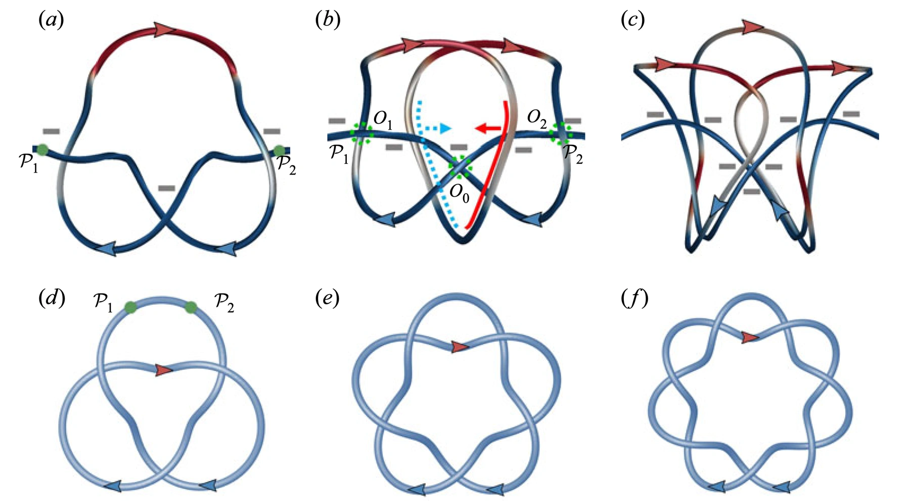

Magnetic field lines can be knotted, and in a sufficiently conducting fluid that knotting is constrained: reconnection is the only process that changes how field lines are connected. So the question of how complexity arises is really a question about a sequence of reconnection events.
磁力线是可以打结的；而在电导率足够高的流体中，这种打结受到约束：重联是唯一能改变磁力线连接方式的过程。因此，“复杂性如何产生”这个问题，实际上是关于一系列重联事件的问题。
Most studies of magnetic topology compare states — an initial field and a later one — and infer what happened in between. That inference is where the mechanism hides, because a single reconnection event changes the geometry that determines whether the next one can occur.
多数磁拓扑研究比较的是状态——初始的场与后来的场——再反推中间发生了什么。机制恰恰藏在这个反推里，因为单独一次重联事件就会改变决定下一次能否发生的几何。
This work follows two perpendicular helical flux tubes of opposite chirality through the entire sequence. Starting from an unknotted configuration, successive reconnections produce U-shaped loops, then overhand knots, then double overhand and more complex knots: a cascade rather than a single event.
这项工作跟随两根相互垂直、手性相反的螺旋磁通管走完了整个序列。从未打结的构型出发，逐次重联先产生 U 形磁力线，再形成反手结，然后是双反手结与更复杂的结——这是一条级联，而不是一次事件。
From two unknotted helical flux tubes of opposite chirality, successive reconnections produce U-shaped loops, then overhand knots, then double overhand and more complex knots — complexity grows stepwise rather than appearing at once.
从两根未打结的、手性相反的螺旋磁通管出发，逐次重联先产生 U 形磁力线，再打成反手结，然后是双反手结与更复杂的结——复杂度是逐步增长的，而不是一次性出现的。
A magnetic-surface field tracks tube boundaries and identifies reconnection regions, so field lines are followed through events rather than compared between snapshots; knot types are classified by crossing number and Alexander–Briggs notation.
磁面场追踪磁管边界并识别重联区域，因此磁力线是被跟随穿过各次事件的，而不是在快照之间做对比；纽结类型按交叉数与 Alexander–Briggs 记法分类。
Each reconnection changes the geometry that enables the next: Lorentz-force-driven rotation and stretching rearrange the lines, closing a feedback between geometry and dynamics until resistive and viscous dissipation ends the cascade.
每一次重联都会改变使下一次成为可能的几何：洛伦兹力驱动的旋转与拉伸重新排布磁力线，形成几何与动力学之间的反馈回路，直到电阻与黏性耗散终止这条级联。
One event enables the next一次事件为下一次创造条件
The first reconnection creates U-shaped field lines. That sounds minor, but it changes how neighbouring lines approach one another, and it is the changed approach geometry that makes the second event possible.
第一次重联产生 U 形磁力线。这听起来微不足道，但它改变了相邻磁力线彼此接近的方式，而正是这种改变后的接近几何，使第二次事件成为可能。
The second reconnection ties overhand knots. By then the field is no longer in the configuration the first event acted on, so describing the outcome as two independent reconnections would misrepresent it — the events are sequential and each is conditioned on the last.
第二次重联打出了反手结。此时磁场已经不再是第一次事件作用其上的那个构型，因此把结果描述成两次独立的重联会歪曲事实——这些事件是顺序发生的，每一次都以前一次为条件。
Rotation and stretching driven by the Lorentz force then continue the sequence, producing double overhand knots and more complex types. The driving is not external: the field’s own geometry generates the motion that will reshape that geometry in the next stage.
随后，由洛伦兹力驱动的旋转与拉伸延续了这个序列，产生双反手结与更复杂的类型。驱动不是外来的：磁场自身的几何生成了将在下一阶段重塑该几何的运动。


Tracking surfaces instead of comparing snapshots追踪曲面，而不是比较快照
The analysis follows field lines through successive reconnection events rather than relying on snapshots of magnetic intensity. That is a deliberate methodological choice, because intensity fields can look similar across qualitatively different connectivities.
该分析让磁力线穿过逐次重联事件被跟随，而不是依赖磁场强度的快照。这是一个有意的方法选择，因为强度场在定性上完全不同的连接方式之间可能看起来很相似。
A magnetic-surface field identifies evolving tube boundaries and reconnection regions. Having a surface representation means a tube’s identity can be followed through an event, instead of inferring identity from a field whose connectivity has just changed.
磁面场识别演化中的磁管边界与重联区域。有了曲面表示，一根磁管的身份就可以被跟随穿过一次事件，而不必从一个连接关系刚刚改变的场中去推断身份。
Knot types extracted at different times are compared using crossing number and Alexander–Briggs classification, with energy conversion tracked alongside. This is what links the visual formation of a knot to a quantitative change in topology: the picture and the invariant refer to the same event.
不同时刻提取出的纽结类型用交叉数与 Alexander–Briggs 分类做比较，同时跟踪能量转化。正是这一步把一个结在视觉上的形成与拓扑上的定量改变联系起来——图像与不变量指的是同一次事件。
A cascade that stops一条会停下来的级联
Complexity is quantified through minimum crossing numbers and distributions of knot types, and it increases over time: the population of field lines moves from simple to more complex knot types through the sequence of reconnections.
复杂性通过最小交叉数与纽结类型分布被量化，并且随时间上升：磁力线的总体在这串重联序列中从简单类型迁移到更复杂的类型。
Knot formation coincides with the conversion of magnetic energy into kinetic energy, which is why the subject matters beyond topology — the same events that complicate the field also release energy.
纽结的形成与磁能向动能的转化同时发生，这正是该课题超出拓扑学本身的意义所在——使场变复杂的同样是那些释放能量的事件。
The cascade eventually slows and stops under resistive and viscous dissipation. That ending is physically necessary: reconnection, and the motions that enable it, both draw on magnetic energy, and dissipation removes both the energy and the small-scale structure the mechanism needs.
这条级联最终在电阻与黏性耗散的作用下减速并停止。这个结局在物理上是必然的：重联本身，以及使重联成为可能的那些运动，都要消耗磁能；而耗散同时带走了能量和该机制所需的小尺度结构。
Topology can become more complicated拓扑可以变得更复杂
The notable result is directional: complexity grows from an initially unknotted configuration. It would be reasonable to expect reconnection to simplify a tangled field, since it is often described as a release mechanism, and here it does the opposite over the observed sequence.
值得注意的是结果的方向性：复杂性从一个最初未打结的构型中生长出来。按常理，人们会预期重联让一个缠结的场变得更简单，因为它常被描述为一种释放机制；而在这里，在观测到的序列中它做的恰恰相反。
The feedback is the mechanism. Lorentz-force-driven motion participates in enabling the next reconnection, so geometry shapes dynamics and dynamics reshapes geometry — a loop that can run for several events before dissipation breaks it.
反馈就是机制本身。洛伦兹力驱动的运动参与促成下一次重联，于是几何塑造动力学、动力学又重塑几何——这个回路可以跑好几轮事件，直到耗散把它打断。
The claim is specific. This is one magnetic-knot mechanism in a resistive flow with one initial condition, not a statement that all reconnection increases knot complexity. Which initial geometries produce cascades and which produce simplification remains open.
这个论断是具体的。这是在一次特定初始条件的电阻流动中的一种磁纽结机制，而不是“所有重联都会增加纽结复杂度”的陈述。哪些初始几何会产生级联、哪些会产生简化，仍然是一个开放问题。
Paper & authors
Magnetic knot cascade via the stepwise reconnection of helical flux tubes
J. Fluid Mech.
Cite this work
@article{Hao_2021,
title = {Magnetic knot cascade via the stepwise reconnection of helical flux tubes},
volume = {912},
ISSN = {1469-7645},
url = {http://dx.doi.org/10.1017/jfm.2020.1145},
DOI = {10.1017/jfm.2020.1145},
journal = {Journal of Fluid Mechanics},
publisher = {Cambridge University Press (CUP)},
author = {Hao, Jinhua
and Yang, Yue},
year = {2021},
month = Feb
}